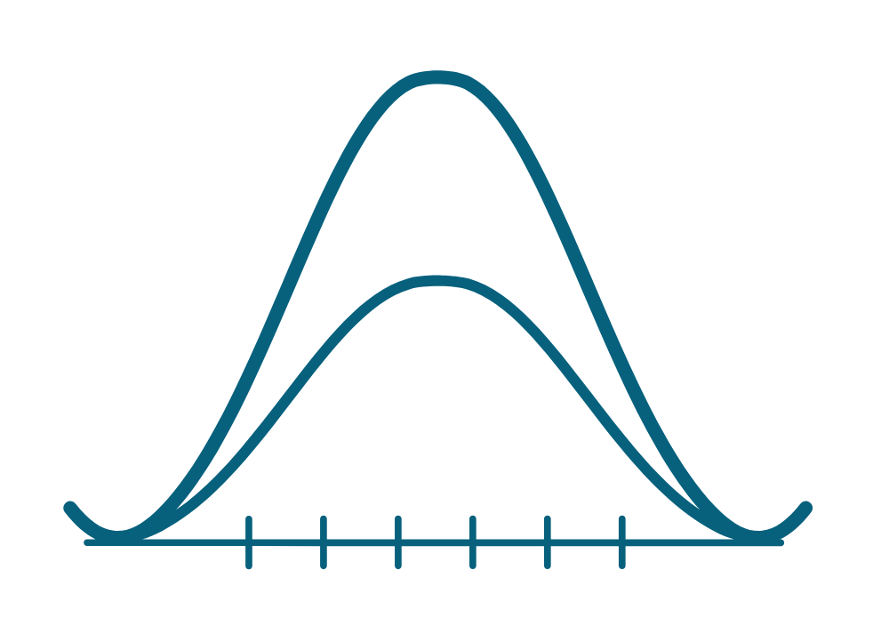

stats4PT
Moves from observations toward scientific claims through the language and methods of statistical and causal inquiry.

Free learning series
The language of scientific inquiry for physical therapists, educators, students, and researchers.
Stats4PT examines how observations become evidence, estimates, and warranted scientific claims through statistical inference, Bayesian reasoning, causal reasoning, and critical reflection.
The course
New to the series? Read the course orientation.
An optional certificate pathway documenting 8 contact hours of professional learning is available by request.
Classroom presentations
A one-hour Clinical Inquiry I presentation about representing population causal knowledge and constructing provisional, patient-specific explanations.
Open the presentationClinical inquiry ecosystem
Stats4PT does not connect every project as one educational path. It develops discovery-oriented inquiry that contributes to, but remains distinct from, integrative model building and practice reasoning.
Moves from observations toward scientific claims through the language and methods of statistical and causal inquiry.
Contributes physiological knowledge about how and why effects occur, adding causal depth beyond interventions and outcomes.
Integrates evidence, mechanisms, context, and uncertainty into comprehensive population-level causal models.
Uses population knowledge with individual information to support inspectable, patient-specific practice reasoning.
stats4PT inquiry + Physiolog mechanisms → Models4PT integration → Clinical Inference Engine practice reasoning